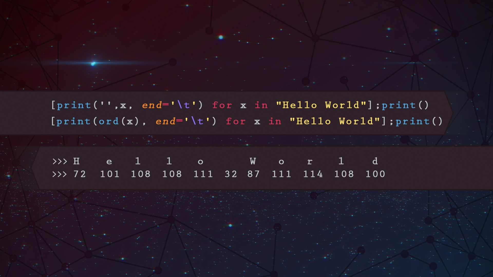

1 / 3

2 / 3

3 / 3


I denne SKAL-opgave, var opgaven at lave en database samt trække forskellige værdier ud med query i SQL.


En opgave om database og sql.
I denne SKAL-opgave, var opgaven at lave en database samt trække forskellige værdiger ud med query i SQL. Måden jeg lavede opgaven på var at bruge SSMS (Sql Server Management Studio 2017) jeg connectede først til SQL via localhost og efter så lavede jeg en database ved navn "Birger Bolcher". Efter det så lavede jeg en table og gav de forskellige værdier som var nævnt med deres variabler. Efter indsatte jeg de forskellige navne, farver osv. hvor jeg så brugte query efter det, med det forskellige commands f.eks SELECT * FROM "Bolcher" WHERE farve LIKE 'Rød' OR farve LIKE'%Blå'; I denne eksemple der går den så ind i tablen og finder rows med røde og blå farver. Når man skriver %blå f.eks. Så tager den alt med blå som f.eks lyseblå osv. Og det gjorde jeg så med de 10 forskellige krav som var i opgaven.
Der er ingen opgave at se her lige nu :)
Der er ingen opgave at se her lige nu :)